Locații de nuntă în județul Buzău
- locații în director
- 23
- cu cazare în registrul SITUR
- 2
- medie ponderată Google
- 4,4 / 5
- evaluări Google
- 9.205
Cum alegi unde mergi la vizionare
Pentru o nuntă cu invitați care vin din municipiul Buzău, comparați din timp accesul spre Măgura, Balta Albă sau Rătești. La o proprietate cu mai multe clădiri, salvați pinul intrării la eveniment, mai ales dacă furnizorii de decor și invitații au trasee diferite.
Un vizitator al Conacului Balta Albă pomenește parcarea în curte. Când alegeți o adresă pentru grădina din fotografii, întrebați unde opresc mașinile la o petrecere cu salonul ocupat. Dacă vă plac două locuri aflate în direcții diferite față de Buzău, cereți pentru fiecare o fotografie de la intrare. Aceasta îi ajută pe șoferi să compare punctele de întâlnire.
Două adrese pentru o zi de vizionări
Pe hartă, între aceste două proprietăți sunt 4,0 km în linie dreaptă. Deschide indicațiile de drum din fișe ca să vezi traseul pe șosea înainte de a stabili a doua întâlnire.
- Conacul Trandafirilor · Parcul Crâng, 120252 Buzău
- Pensiunea Bianka · DN2 1, 127327 Mărăcineni
Explorează după localitate
Toate locațiile din județul Buzău
Ordinea ține cont de nota Google și de numărul evaluărilor. Cum calculăm ordinea
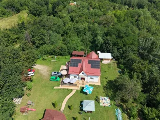
Fotografie a locației · Sursa fotografiei Runcu · Bed & Breakfast
Pensiunea Casa Runcu Buzau
Pensiunea Casa Runcu Buzau. Două familii, dintre care una cu copii, își amintesc cu plăcere de gazdele de la Casa Runcu după două nopți petrecute în august.
Sat, Str Principala nr 16Bis, 127458 Runcu+40 737 917 456
Fotografie a locației · Sursa fotografiei Buzău · Cazare în regim hotelier
JADE guesthouse
JADE guesthouse. Un oaspete la JADE vorbește despre un cartier liniștit al Buzăului, o rezervare ușor de făcut și cafea și ceai incluse la cazare.
Strada Martirilor, 120138 Buzău+40 763 174 028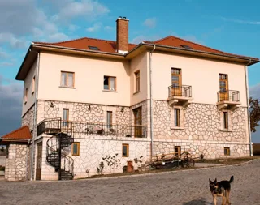
Fotografie a locației · Sursa fotografiei Fințești · Cramă
LacertA Winery
LacertA Winery. Dacă vreți să spuneți povestea vinului chiar la masă, întrebați cine poate prezenta etichetele și cât ar dura o degustare înainte de cină.
DJ205 434, 127392 Fințești+40 374 887 474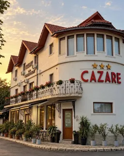
Fotografie a locației · Sursa fotografiei Buzău · Hotel
Hotel & Restaurant - Freedom & Relax
Hotel cu restaurant pe strada Turdei din Buzău, 4,8 din 109 evaluări, gazde foarte lăudate și evenimente la parter. Verifică întâi camerele.
Strada Turdei 8, 120159 Buzău+40 758 158 736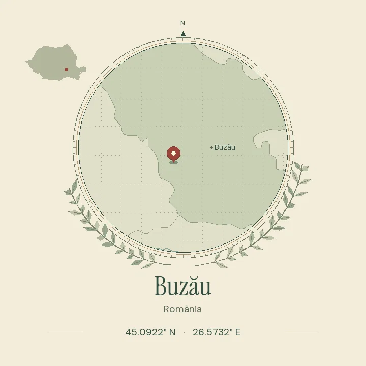
Hartă ilustrată Zona Pietroasele · Cramă
Domeniile Roșca
La Domeniile Roșca, căsuțele în formă de butoi sunt tocmai detaliul despre care merită să întrebi înainte de a le promite invitaților o noapte la cramă.
str. La butoaie 6, 127470+40 742 411 467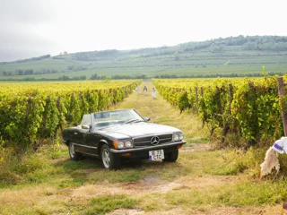
Fotografie a locației · Sursa fotografiei Săsenii Noi · Cramă
Crama 3 Conace
Cramă tânără din Dealu Mare, la Săsenii Noi, Buzău: trei vinuri ale casei, concerte și un restaurant nou. Ce să afli înainte de nuntă.
127675 Săsenii Noi+40 740 155 057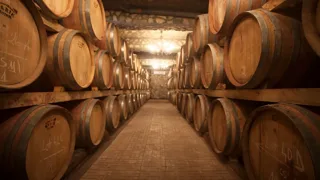
Fotografie a locației · Sursa fotografiei Săhăteni · Cramă
Crama Domeniile Săhăteni
Cramă cu 82 de hectare de vie la Săhăteni, Buzău, lăudată pentru degustări detaliate; spațiile pentru evenimente nu sunt documentate.
DJ205, 127535 Săhăteni+40 753 022 391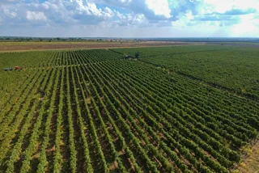
Fotografie a locației · Sursa fotografiei Săhăteni · Cramă
Domeniile Franco-Române
Cramă pe strada Școlii din Săhăteni, Buzău, nota 4,8. Lăudată pentru vin și preț; nu sunt date despre evenimente sau spații de închiriat.
Strada Școlii 143, 127535 Săhăteni+40 784 557 744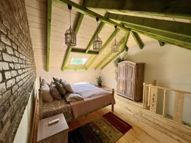
Fotografie a locației · Sursa fotografiei Rătești · Restaurant
Conacul Grigorescu
Pensiune slow food cu livadă și piscină la Rătești, Buzău: doar 3 apartamente, se poate închiria integral. Confirmă rezervarea în scris.
Terra Carpatica SRL, Strada Bisericii 76, 127044 Răteşti+40 785 131 848
Hartă ilustrată Buzău · Cramă
Crama Berechet
Crama Berechet. Un vizitator al Cramei Berechet a apreciat atmosfera intimă și discuțiile cu oamenii întâlniți acolo, pe lângă vinurile degustate.
Sat Saranga, Strada Zorilor nr. 3, 127470 Buzău
Hartă ilustrată Buzău · Cramă
La Otilia, Otirom Rovinota
La Otilia, numele Otirom Rovinota apare în asociere cu vinurile din Buzău, iar o apreciere publicată de un client se referă strict la acestea.
Bloc 30, după Profi Nehoiu, Calea Mihai Viteazu 43, 125100 Buzău+40 748 322 864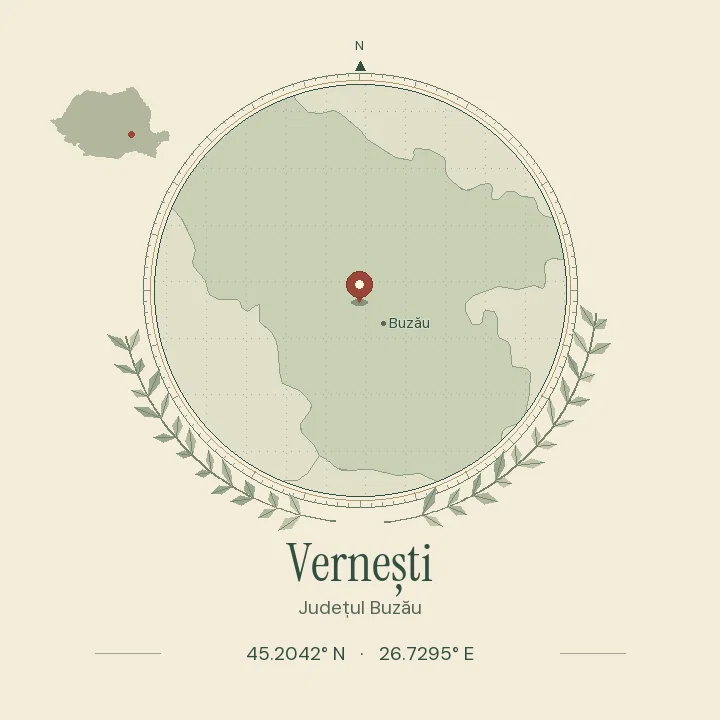
Hartă ilustrată Vernești · Cramă
Bodega Pietroasa
La Bodega Pietroasa, comentariul disponibil vorbește despre două vinuri din soiuri diferite pe care autorul le-a cumpărat și degustat.
127675 Vernești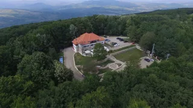
Fotografie a locației · Sursa fotografiei Măgura · Hotel
Cetățuia
Hotel în pădure la Măgura, Buzău, cu bucătărie locală lăudată și 1.317 evaluări. Drumul de acces e forestier; ce să întrebi pentru nuntă.
Strada Cetăţuii nr 1, 120129 Măgura+40 731 999 222
Hartă ilustrată Buzău · Cramă
CRAMA SLĂNIC GRANDE
CRAMA SLĂNIC GRANDE, Buzău. Un client vorbește despre cumpărături în două puncte ale cramei, inclusiv cel de pe Unirii.
Bulevardul Unirii Bl 18, B Parter, 120267 Buzău+40 752 141 617
Hartă ilustrată Buzău · Cramă
Crama Slanic Dorobanti
Crama Slanic Dorobanti, Buzău. Un vizitator scrie că punctul cramei Slănic Dorobanți s-a mutat într-un spațiu mai mare.
Strada Dorobanți 92, 120000 Buzău+40 752 141 617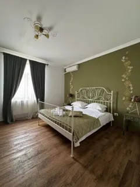
Fotografie a locației · Sursa fotografiei Berca · Pensiune
Pensiunea Speranţa
Pensiunea Speranţa, Berca. Mobilierul tradițional recondiționat și pictat apare printre detaliile apreciate de un oaspete din Berca.
Str. 1 Decembrie nr. 164, Pleşcoi, jud. Buzău, 127042 Berca+40 744 497 903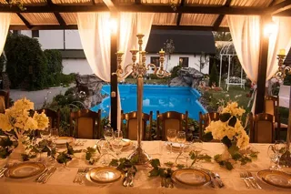
Fotografie a locației · Sursa fotografiei Buzău · Han
Complex Moara Dragaicilor
Complex Moara Dragaicilor, Buzău. Grădina de vară de la Moara Drăgaicilor este prezentată pentru până la o sută de invitați.
EURO 85 Nr. 1, 127325 Buzău+40 238 717 213
Fotografie a locației · Sursa fotografiei Buzău · Hotel
Corner Center Rental
Hotel în Buzău cu parcare gratuită în curte, 200 de lei pe noapte după un oaspete. Bun pentru cazarea invitaților, dar cu pereți subțiri.
Strada Alexandru Marghiloman 2, 120031 Buzău+40 745 321 255
Fotografie a locației · Sursa fotografiei Buzău · Restaurant cu specific românesc
Conacul Trandafirilor
Conacul Trandafirilor, Buzău. O familie povestește cum a combinat o plimbare prin parcul Crâng cu o masă pe terasa conacului.
Parcul Crâng, 120252 Buzău+40 740 367 829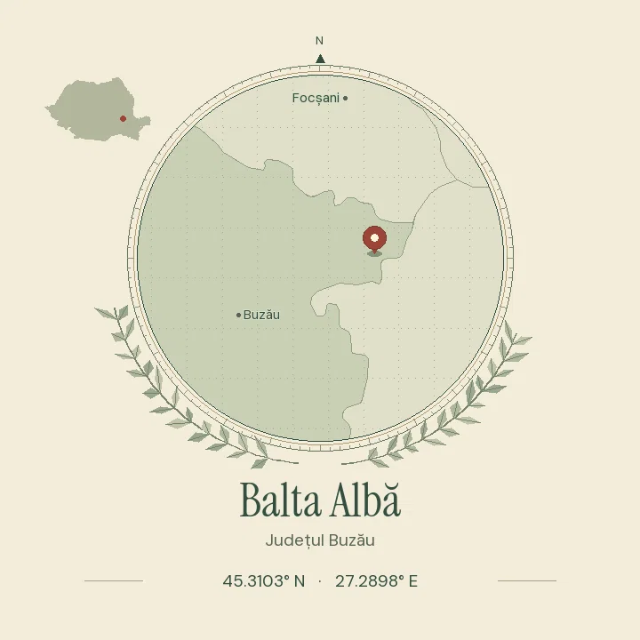
Hartă ilustrată Balta Albă · Pensiune
Conacul "Balta Alba"
Pensiune cu restaurant și livadă pe DN22 la Balta Albă: camere mari, mâncare gătită pe loc și câteva recenzii critice despre curățenie.
DN22, 127015 Balta Albă+40 744 703 646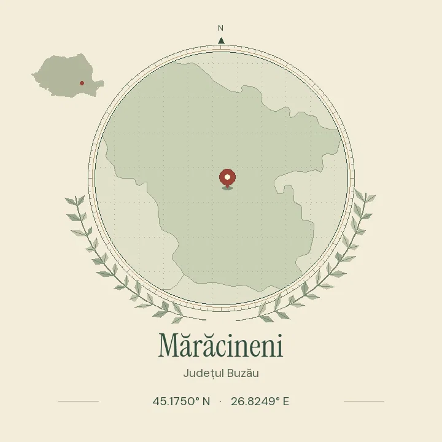
Hartă ilustrată Mărăcineni · Cazare
Pensiunea Bianka
Pensiunea Bianka, Mărăcineni. La Bianka, impresia unui oaspete spune mai mult despre dimineața de după petrecere decât despre seara nunții.
DN2 1, 127327 Mărăcineni+40 770 175 492
Hartă ilustrată Buzău · Hotel
Hotel Sport B90
Hotel Sport B90. Din experiența relatată de un organizator de excursii reiese o chestiune importantă pentru nunțile cu multe rude din alte orașe.
Str. Mesteacanului Nr.1, Strada Sporturilor, 120024 Buzău+40 238 720 222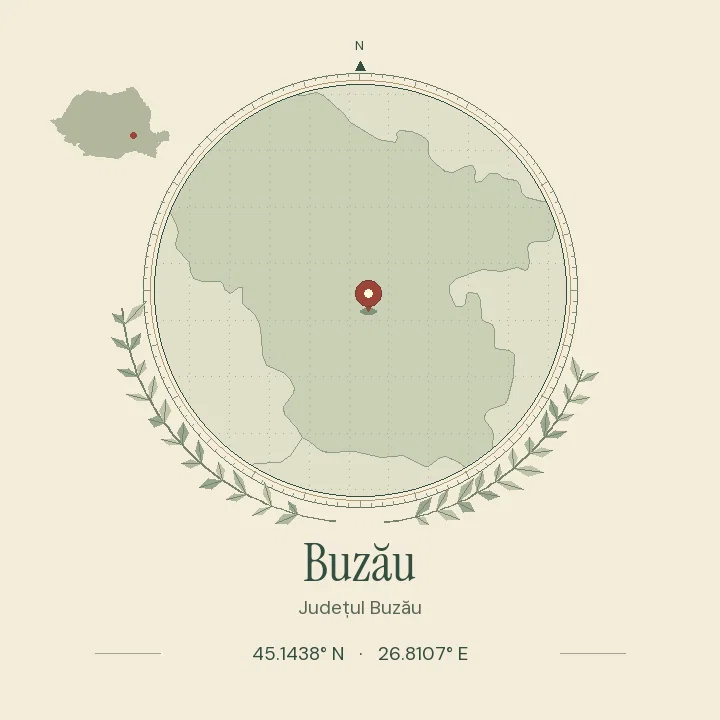
Hartă ilustrată Buzău · Cramă
Boutikue coffe &fine drinks
Boutikue coffe &fine drinks. Categoria de cramă din hartă merită lămurită direct cu administratorul, fiindcă de ea depinde ce îi puteți propune grupului.
Calea Eroilor B16, 120001 Buzău+40 785 457 174
Întrebări despre locațiile din județul Buzău
Unde pot dormi invitații în județul Buzău?
În registrul de cazare SITUR găsim Conacul Grigorescu (6 locuri de cazare), Pensiunea Bianka (30 de locuri de cazare). Verifică ce camere sunt libere pentru noaptea evenimentului.
Ce proprietăți din județul Buzău au grădină sau terasă?
Pensiunea Casa Runcu Buzau (terasă); JADE guesthouse (terasă); Hotel & Restaurant - Freedom & Relax (terasă). Cere administratorului condițiile de folosire pentru o petrecere privată.
Care locație din județul Buzău are cele mai multe evaluări Google?
Complex Moara Dragaicilor are 4.029 de evaluări în profilul Google folosit la documentare. Evaluările acoperă și alte experiențe la proprietate, inclusiv vizitele fără eveniment.
Unde apare o intrare accesibilă în județul Buzău?
Profilurile Google indică o intrare accesibilă la LacertA Winery, Domeniile Roșca, Crama Domeniile Săhăteni. Pentru o cununie în exterior, cere detalii despre traseul dintre intrare și zona cu scaune.